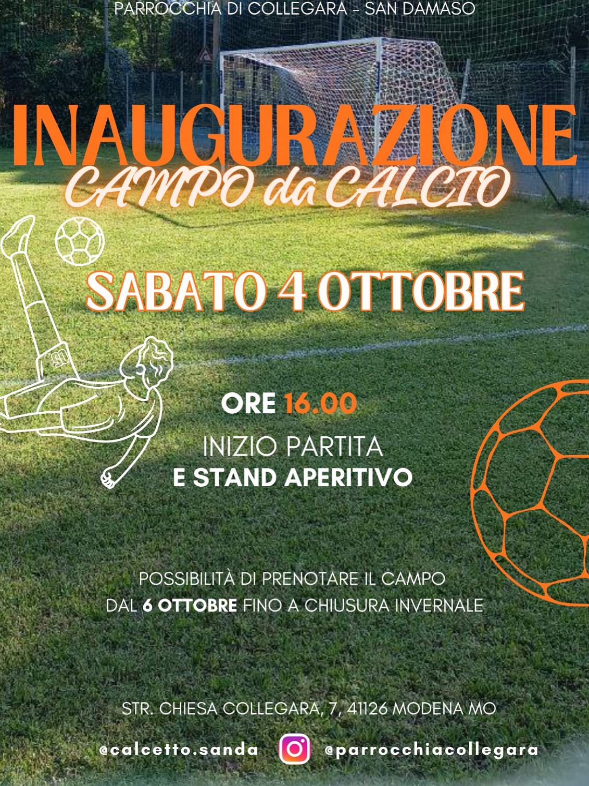

Inaugurazione
del Campo
Dopo mesi di lavori, sabato 4 ottobre 2025 abbiamo aperto ufficialmente il campo con una partita inaugurale e uno stand aperitivo. Un pomeriggio di calcio, amicizia e comunità.
Le prenotazioni regolari sono state aperte dal 6 ottobre 2025. Da allora il campo è attivo e disponibile per tutti.
Il progetto nasce da un'idea semplice: rimettere in vita un vecchio campo poco utilizzato e trasformarlo nel posto dove noi per primi vorremmo giocare. Con mesi di lavoro e il supporto di alcuni sponsor, ci siamo riusciti.
L'inaugurazione del 4 ottobre 2025 è stato il punto d'arrivo di tutto quel lavoro — e allo stesso tempo il punto di partenza di qualcosa di più grande. Erano presenti amici, sponsor e tanta voglia di giocare.
⚽ Inizio partita ore 16:00 con stand aperitivo a bordo campo. Dal 6 ottobre prenotazioni aperte a tutti tramite il sistema online.
Grazie a chi c'era quel giorno e a chi continua a supportarci. Il campo è aperto — ci vediamo in campo!